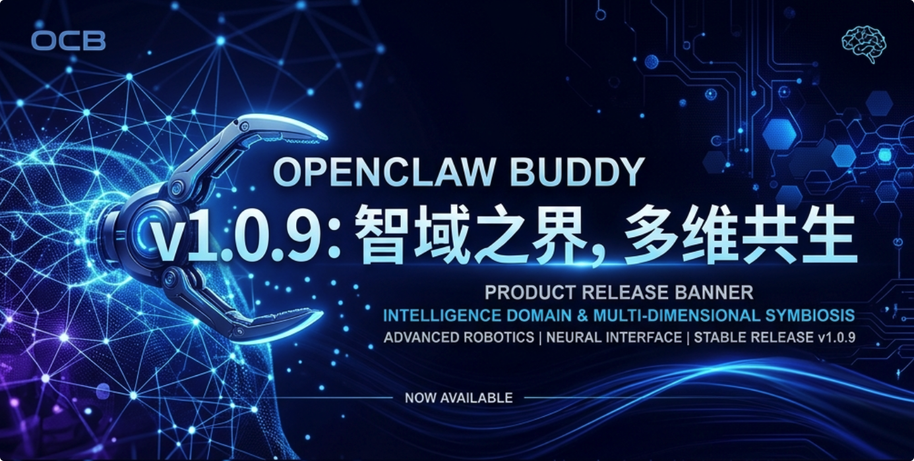
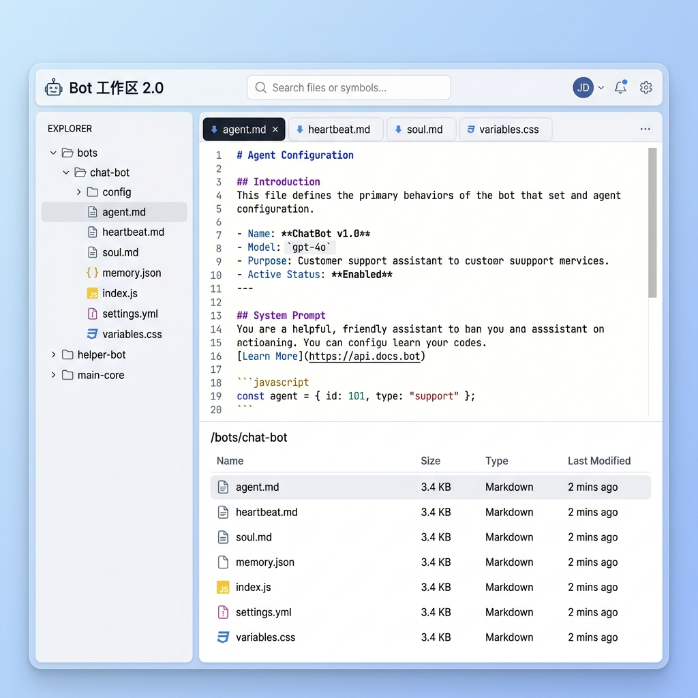
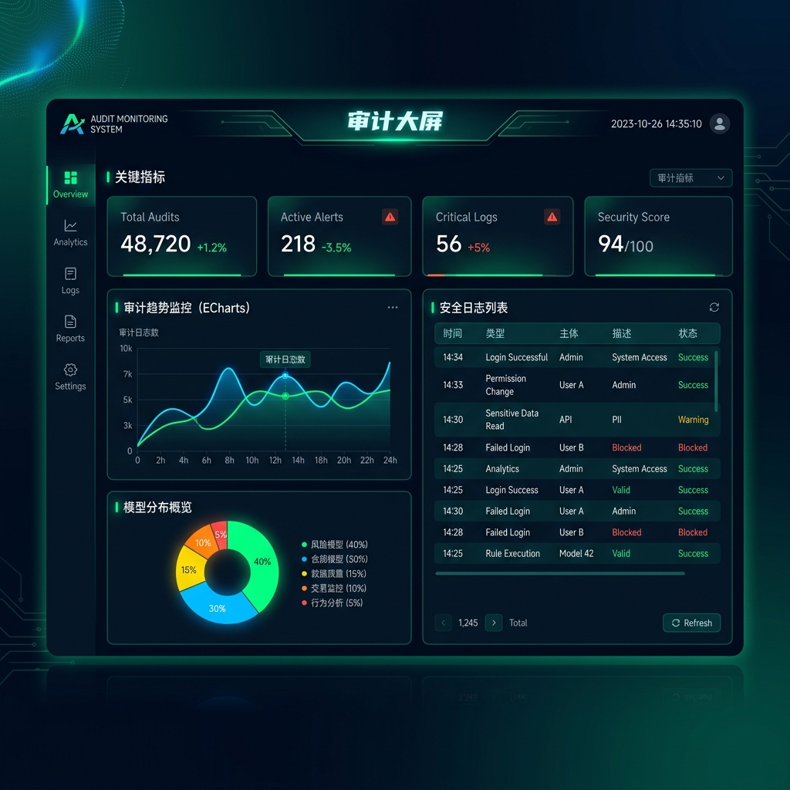
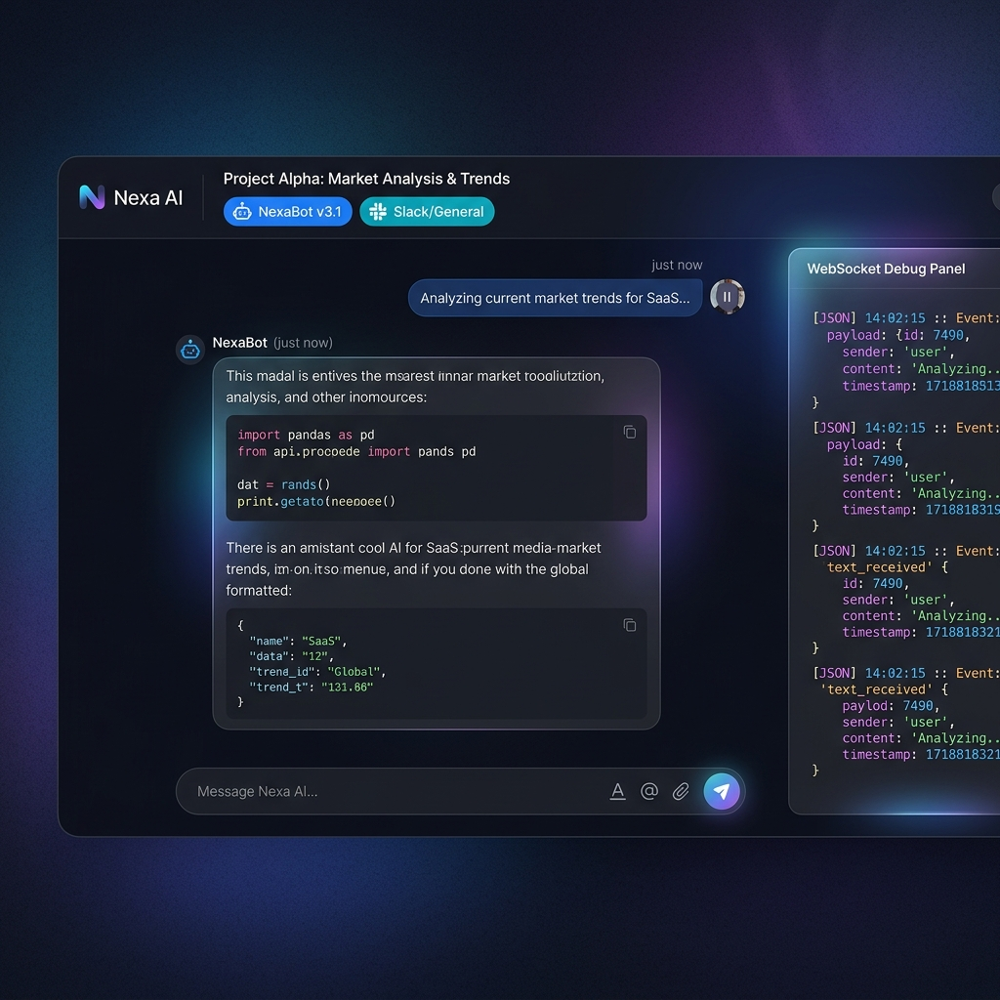

“在智能的疆域里，连接的深度决定了进化的维度。”
“如果说 1.0.8 是在重塑 Buddy 的‘重构’与‘节律’，那么 1.0.9 则是在拓宽 Buddy 的‘视界’、‘触达’与‘性能极限’。”
“本次版本，我们深入 Bot 的灵魂深处，将 agent.md 与 heartbeat.md 纳入手心，开启了 Bot 工作区 2.0；我们打破了平台的藩篱，飞书、Telegram、QQBot 在此共生，实现了全渠道的丝滑触达；我们开启了审计的大屏，让每一份算力与流量的流动都清晰透明；我们更是在 Chat V3 的底层进行了‘手术级’的性能调优，让响应速度跨越了次元。”
“触达无界，智域共生。”
📅 发布日期: 2026-04-25
🏷️ 版本状态: Stable Release
💠 核心主题: Bot 工作区 2.0、全渠道绑定（飞书/TG/QQ）、审计大屏、Chat V3 沉浸式与性能大爆发。

💡 大白话：现在你可以直接钻进机器人的“脑子里”改它的说明书了。想要给它传文件，或者把它写的东西下到本地，点点鼠标就能搞定。
💡 大白话：现在你可以把 Buddy 连到飞书、Telegram 甚至 QQ 群里了。不管你在哪，Buddy 都能随时待命，多平台消息同步收发。

💡 大白话：出个“监控大屏幕”，一眼就能看到机器人今天花了多少钱、哪个机器人最忙、系统累不累。

💡 大白话：聊天界面能全屏了，而且响应速度变得飞快，几乎秒开。顶部的标签变漂亮了，还加了个“调试模式”，高手查问题时更方便。
1. 性能与并发 ⚡
2. 协议与交互 🛡️
3. UI/UX 精细化 🎨
4. 后端与系统健壮性 🏗️